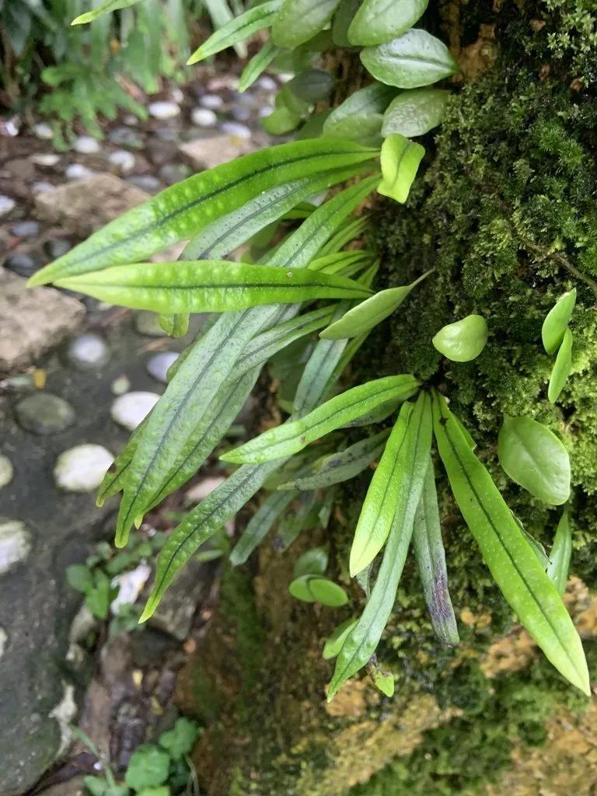

蕨类与裸子植物 · 植物界
瓦韦 Lepisorus thunbergianus

瓦韦的叶片条形革质，像一片片小瓦片贴在石上，叶背有两列金黄色的孢子囊群，全草可入药，是常见的附生蕨类。
- 分类
- 门蕨类植物门纲水龙骨纲目水龙骨目科水龙骨科属瓦韦属
- 栖息环境
- 阴湿树干、岩壁、石缝与老墙，耐阴耐旱，喜湿润
- 地理分布
- 中国长江以南各地，日本、朝鲜半岛也有分布
- 保护级别
- 暂无评估；常见附生蕨类
物种志
瓦韦是水龙骨科的多年生蕨类，株高 10–30 cm。根状茎横走，密生棕色鳞片，常附生于树干或岩石表面。叶疏生，叶片条状披针形，革质，边缘全缘，向基部渐狭成短柄，表面深绿色，叶背淡绿色。孢子囊群圆形，大而醒目，在叶背中脉两侧各排成一列，成熟时呈金黄色或橙黄色，看起来像两行排列整齐的“星星”。
瓦韦喜阴湿环境，常附生于树干、岩壁、石缝与老墙上，在南方山区与园林中很常见。它耐旱能力较强，干燥时叶片会卷曲，遇水后重新舒展。瓦韦以孢子繁殖，根状茎也能蔓延。全草入药称“瓦韦”，有清热解毒、利尿通淋、止咳化痰之效，民间用于咽喉肿痛、小便不利等症。它植株小巧、叶形整齐，也可用于假山与树桩盆景的附生点缀。
形态与习性
- 株高10–30 cm
- 叶条状披针形，革质全缘
- 孢子囊群中脉两侧各一列，金黄色
- 根状茎横走，密生棕色鳞片
- 药用全草清热解毒、利尿
- 习性耐阴耐旱，常附生石上
趣味知识
- 瓦韦的孢子囊群在叶背排成整齐的两列，像两行小星星。
- 它常贴在树干或石壁上生长，干旱时叶片卷曲、遇水展开。
- 中药“瓦韦”就是它的全草，民间用来清热利尿、止咳。